International playing-card society historical tech archives, Tang dynasty imperial court chronicles, and mediterranean silk trade customs manifests.
Tang Dynasty China (9th Century CE): The "Leaf Game"
Long before Renaissance nobility commissioned painted Italian decks, the physical medium of playing cards was invented in China.
A traditional woodblock deck of Water Margin cards (Shuihu Pai) from Weifang, China—now held at the Bibliothèque nationale de France—featuring money suits and legendary outlaw portraits that directly predated modern Mahjong tiles.
The Innovation: The earliest credible references to card play appear in late Tang Dynasty texts. In 868 CE, documents describe Princess Tongchang playing a "leaf game" (yezi xi) with members of the royal clan.
The Materiality: Modeled after early paper currency, these paper "leaves" were manufactured using primitive woodblock printing. They evolved into "money cards" featuring suits representing single coins, strings of cash, and multiples of currency.
A Ming Dynasty woodcut playing card from c. 1400 AD, measuring 9.5 cm by 3.5 cm, discovered near Turpan, Xinjiang, and held in the Ethnologisches Museum in Berlin.
The Transcontinental Journey to Europe
The deck of cards did not materialize out of thin air in Italy. It migrated slowly across continents over several centuries:
A map showcasing the overland (red) and maritime (blue) networks of the Silk Road that connected East Asia to the Mediterranean. Base imagery courtesy of NASA/Goddard Space Flight Center Scientific Visualization Studio.
The Silk Road: Chinese card game variants traveled westward along major trade networks through India and Persia.
The Mamluk Sultanate (13th Century): Islamic merchants in Egypt refined the system into highly structured 52-card decks. These decks used complex geometric and calligraphic designs (due to Islamic religious prohibitions on depicting human forms) and featured four suits: Polo Sticks, Coins, Swords, and Cups.
Surviving 15th-century Mamluk kanjifah cards showing highly stylized suits of Coins, Polo Sticks, Cups (called "myriads"), and Swords, strictly adhering to non-iconic geometric patterns. Assembled from original textile and papyrus fragments. Collection: Topkapı Palace Museum, Istanbul.
The European Arrival (1370s): Trade and military interaction brought these Egyptian cards to European ports like Venice and Barcelona. Within decades, local card makers adapted these shapes into the standard Italian suits that laid the groundwork for Tarocchi.
An early Italian woodcut uncut sheet (c. 1500) measuring 304 mm by 217 mm, showcasing twenty cards that illustrate the transition from Islamic suits to traditional Italian Batons, Swords, Cups, and Coins; held in the Cary Collection at Yale University.
Petrarch’s Triumphs and the Major Arcana
Francesco Petrarch’s 14th-century allegorical poem, I Trionfi ("The Triumphs"), and 15th-century northern Italian court records documenting early Carte da Trionfi card games.
The Renaissance Allegory
Francesco Pesellino's The Triumphs of Love, Chastity and Death (c. 1450) is a tempera and gold cassone panel illustrating Petrarch's poetry. Housed in the Isabella Stewart Gardner Museum, the narrative progresses across a shared landscape from Love's passion, to Chastity's restraint, to Death's ultimate triumph.
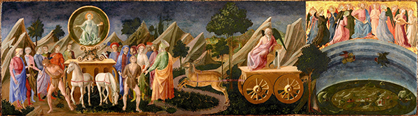
Francesco Pesellino's The Triumphs of Fame, Time and Eternity (c. 1450) is a tempera and gold panel painting based on Petrarch's poetry. Displayed in the Isabella Stewart Gardner Museum, the continuous landscape progresses sequentially from the historical memory of the human realm on the left, through the temporal decay of Time in the center, to a tiered vision of the divine cosmos on the right..
The Hierarchical Alignment
Here is how Petrarch's six poetic triumphs map directly to the historical imagery of the early Italian decks:
The Triumph of Love (Amor)
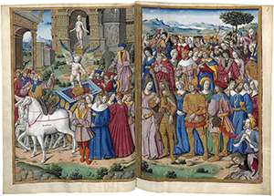
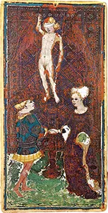
Left: The Master of Petrarch's Triumphs, 'The Triumph of Love' (c. 1503), illumination on parchment from Ms. fr. 594, folio 5v. Collection: Bibliothèque nationale de France, Paris. Right: Visconti-Sforza card 06: L'Amore. Represents youth, earthly desire, and instinct. Tarot Parallel: The Lovers card.
The Triumph of Chastity (Pudor)
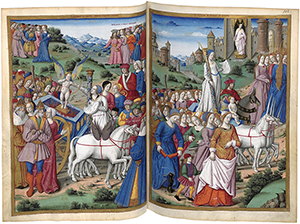
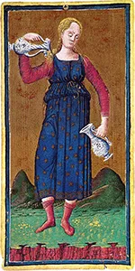
Left: The Master of Petrarch's Triumphs, 'The Triumph of Chastity' (c. 1503), illumination on parchment from Ms. fr. 594, folio 9r. Collection: Bibliothèque nationale de France, Paris. Right: Visconti-Sforza card 14: La Temperanza. Meaning: Virtue, restraint, and mental control triumph over base desire. Tarot Parallel: The Temperance card.
The Triumph of Death (Mors)
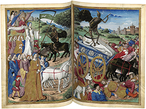
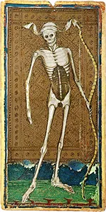
Left: The Master of Petrarch's Triumphs, 'The Triumph of Death' (c. 1503), illumination on parchment from Ms. fr. 594, folio 10v. Collection: Bibliothèque nationale de France, Paris. Right: Visconti-Sforza card 13: La Morte. Meaning: The great equalizer that conquers all mortal achievements and social status. Tarot Parallel: The Death card.
The Triumph of Fame (Fama)
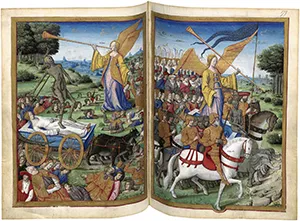
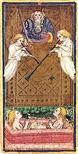
Left: The Master of Petrarch's Triumphs, 'The Triumph of Fame' (c. 1503), illumination on parchment from Ms. fr. 594, folio 11r. Collection: Bibliothèque nationale de France, Paris. Right: Visconti-Sforza card 20: Il Giudizio. Meaning: Memory, legacy, and good deeds outlast physical mortality. Tarot Parallel: The Judgment card.
The Triumph of Time (Tempus)
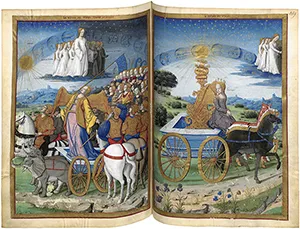
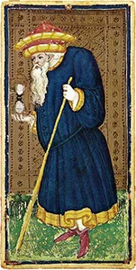
Left: The Master of Petrarch's Triumphs, 'The Triumph of Time' (c. 1503), illumination on parchment from Ms. fr. 594, folio 12r. Collection: Bibliothèque nationale de France, Paris. Right: Visconti-Sforza card 09: Il Tempo. Meaning: Time eventually erodes all earthly fame. Tarot Parallel: The Hermit card (originally called 'Il Tempo').
The Triumph of Eternity (Eternitas)
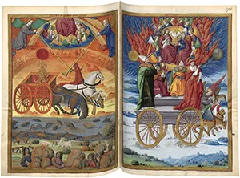
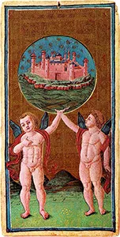
Left: The Master of Petrarch's Triumphs, 'The Triumph of Eternity' (c. 1503), illumination on parchment from Ms. fr. 594, folio 13r. Collection: Bibliothèque nationale de France, Paris. Right: Visconti-Sforza card 21: Il Mondo. Meaning: The permanent, divine realm that outlasts time, space, and human change. Tarot Parallel: The World card.
Medieval Archetypes and The Fool’s Journey
Geoffrey Chaucer’s 14th-century middle English literary masterpiece, the canterbury tales, paired with 20th-century mythic storytelling frameworks regarding universal human paths.
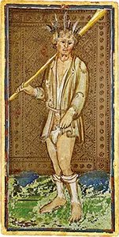
Visconti-Sforza card 00: Il Matto (The Fool), depicted as an unkempt wanderer with feathers in his hair, symbolizing the primal state of innocence before the journey begins. Original card painted by Bonifacio Bembo (c. 1450). Collection: Pierpont Morgan Library, New York.
The Framework Narrative
Before modern psychology defined archetypes, medieval literature used them to explore the human condition. A prime example is Geoffrey Chaucer’s 14th-century masterpiece, The Canterbury Tales. Chaucer utilizes a classic framework narrative: a diverse group of pilgrims travel together on a spiritual journey, sharing stories that reveal their inner virtues, flaws, and motivations.
This mirrors the concept of The Fool’s Journey in tarot. The Major Arcana acts as a visual pilgrimage. The Fool (Card 0) is the ultimate, naive traveler who walks through the world, encountering distinct archetypal figures to gain wisdom and achieve spiritual completion.
Literary and Tarot Archetype Parallels
Here are some examples of how Chaucer's pilgrims align with the Major Arcana:
The Knight and The Chariot
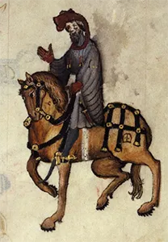
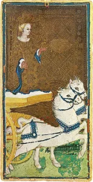
Left: Ellesmere manuscript illumination of Chaucer's Knight (c. 1400–1410), ink and pigments on parchment (folio 136v), held at the Huntington Library. Right: Visconti-Sforza card 07: Il Carro. The Knight embodies medieval chivalry and order, paralleling the Tarot's Chariot to signify willpower, focus, and material mastery.
The Prioress and The High Priestess
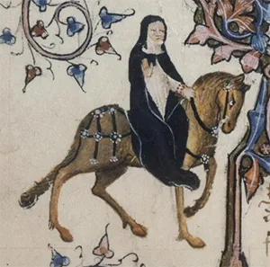
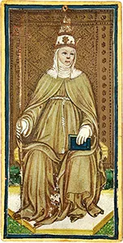
Left: Ellesmere manuscript illumination of the Prioress, ink and pigments on parchment (folio 114v), held at the Huntington Library (derivative work by Toby1). Right: Visconti-Sforza card 02: La Papessa (The Popess). The Prioress embodies educated, structured religious life with hidden depth, paralleling the Tarot's High Priestess to signify intuition, divine mystery, and hidden knowledge.
The Wife of Bath and The Empress
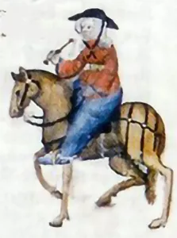
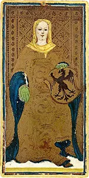
Left: Ellesmere manuscript illumination of the Wife of Bath, ink and pigments on parchment (folio 148v), held at the Huntington Library. Right: Visconti-Sforza card 03: L'Imperatrice (The Empress). Wealthy and fiercely independent, she embraces earthly desire and life, paralleling the Tarot's Empress to signify abundance, fertility, and independent feminine power.
The Parson and The Hierophant
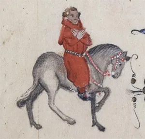
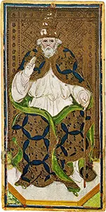
Ellesmere manuscript illumination of the Parson, ink and pigments on parchment (folio 210v), held at the Huntington Library. Right: Visconti-Sforza card 05: Il Papa (The Pope). A holy, self-sacrificing country priest who leads by moral example, he parallels the Tarot's Hierophant to signify spiritual wisdom, formal education, and institutionalized morality.
The Pardoner and The Devil
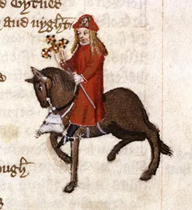
Left: Ellesmere manuscript illumination of the Pardoner, ink and pigments on parchment (folio 142r), held at the Huntington Library. Right: Rider-Waite-Smith card 15: The Devil. A corrupt church official who exploits spiritual fears by selling fake relics and forged pardons for profit, he parallels the Tarot's Devil to signify spiritual deception, material entrapment, greed, and manipulation.